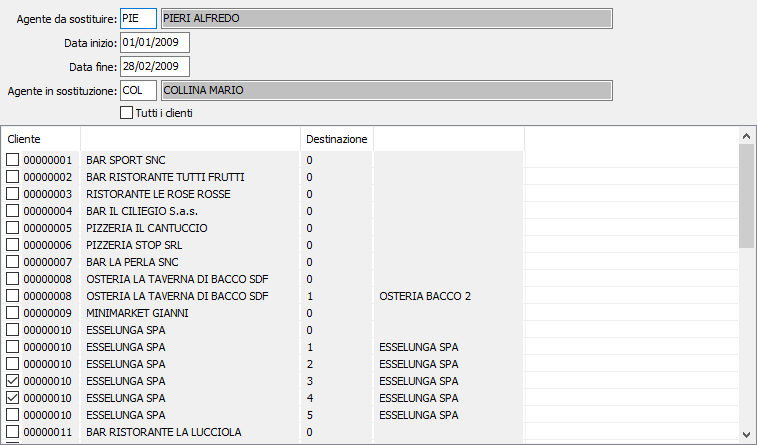

Gestione sostituzioni
La procedura consente di sostituire temporaneamente un agente (in malattia o in ferie) assegnando provvisoriamente i clienti dell’agente assente.

Sono richiesti il codice agente da sostituire, il periodo di sostituzione definito da una DATA INIZIO ed una DATA FINE e l'agente che effettuerà la sostituzione. La sostituzione può riguardare tutti i clienti, spuntando la relativa casella TUTTI I CLIENTI, oppure solo alcuni che devono essere indicati nell'elenco che compare in basso e che comprende tutti i clienti assegnati all'agente che deve essere sostituito.